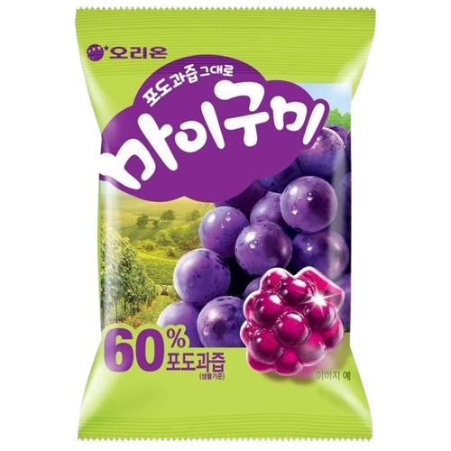
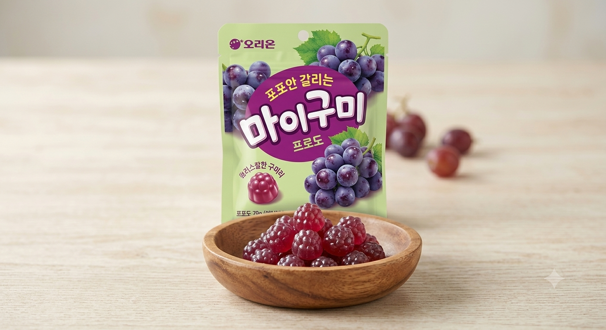

<div> <table style="border-collapse: collapse; width: 99.9251%;" border="1"><colgroup><col style="width: 50%;"><col style="width: 50%;"></colgroup> <tbody> <tr> <td> <div><strong><span style="font-size: 14pt; color: #000000;">Orion Jeleuri cu gust de struguri</span></strong></div> <div><strong><span style="font-size: 14pt; color: #000000;">66g</span></strong></div> <div><span style="font-size: 14pt; color: #000000;">Rasfata-te cu aroma intensa si suculenta a strugurilor! Aceste jeleuri coreene autentice iti ofera o textura incredibil de gumata si elastica, fiind gustarea ideala si plina de prospetime pentru orice moment al zilei.</span></div> </td> <td></td> </tr> <tr> <td></td> <td><span style="font-size: 14pt; color: #000000;">Descopera jeleurile numarul unu in Coreea! Create cu suc natural de fructe si imbogatite cu colagen, aceste bombonele gumate surprind prin explozia de savoare fructata si consistenta lor unica. Deschide punga si bucura-te de un deliciu unic!</span></td> </tr> </tbody> </table> </div>